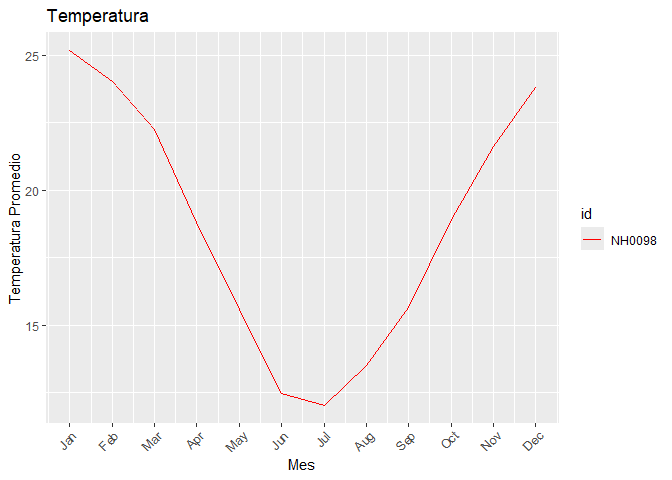

Autores
Este paquete fue creado por Justo Borrás y Wenceslao Tejerina, ambos estudiantes de la Licenciatura en Ciencia de Datos Universidad Austral
Instalación
Se puede instalar la version de windyR desde GitHub con:
# install.packages("pak")
pak::pak("wenceslao015/windyR")
#> ℹ Loading metadata database✔ Loading metadata database ... done
#>
#> ℹ No downloads are needed
#> ✔ 1 pkg + 41 deps: kept 34 [5.6s]Funciones
-
descarga_datos(): Descarga un archivo CSV de datos de una estación meteorológica específica desde un repositorio en línea y lo guarda en la ruta especificada. Luego, lee el archivo y devuelve los datos como un data frame. -
tabla_de_temperatura_estaciones: genera una tabla resumen que incluye la temperatura máxima, mínima y promedio por estación a partir de un conjunto de datos de temperatura. -
grafico_mensual: Genera un gráfico de líneas que muestra la temperatura promedio mensual para cada estación en los datos proporcionados. Permite personalizar el título y los colores del gráfico.
Ejemplos de uso
Así es como debería usarse nuestro paquete:
NH0098 = descarga_datos("NH0098", "estacion_NH0098.csv")
#> Warning: One or more parsing issues, call `problems()` on your data frame for details,
#> e.g.:
#> dat <- vroom(...)
#> problems(dat)
#> Rows: 23733 Columns: 35
#> ── Column specification ────────────────────────────────────────────────────────
#> Delimiter: ","
#> chr (2): id, direccion_viento_1000cm
#> dbl (21): temperatura_abrigo_150cm, temperatura_abrigo_150cm_maxima, temper...
#> lgl (11): temperatura_intemperie_50cm_minima, temperatura_inte_5cm, tempera...
#> date (1): fecha
#>
#> ℹ Use `spec()` to retrieve the full column specification for this data.
#> ℹ Specify the column types or set `show_col_types = FALSE` to quiet this message.
tabla_de_temperatura_estaciones(NH0098)
#> # A tibble: 1 × 4
#> id min_temp max_temp mean_temp
#> <chr> <dbl> <dbl> <dbl>
#> 1 NH0098 -17.4 37.4 18.6
grafico_mensual(NH0098, colores = "red", titulo = "Temperatura")